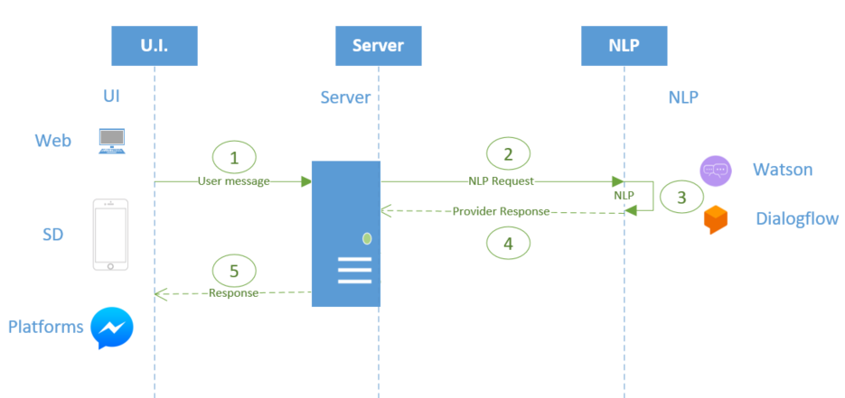

The following explains in detail the architecture behind any chatbot generated using GeneXus.  Step 1: The user sends a message to the chatbot through one of the available clients. They can be the web chat or the sd chat generated. Step 2: The Server (where the programs generated by the Chatbot generator run) receives the message and sends it to the AI provider with whom you're working (i.e: Watson) Step 3: The AI provider applies its NLP algorithms on the model generated with the Conversational Flows, in order to define what the user wants. Respond to the server with the intention and parameters detected. Step 4: The server responds to the response of the NLP Provider, and based on the action that was understood that the user wants to perform, is redirected internally to the service generated to comply with it. These "generated services" know how to communicate with the objects that the user defined as resolvers for a flow (the Conversational objects). Step 5: The user is answered. This response can have different formats, depending on what has been defined in the Conversational Flows for the flow in question.
|
| Backlinks | |
| Chatbot Context | Chatbot generator |
| Toc:Chatbots in GeneXus |